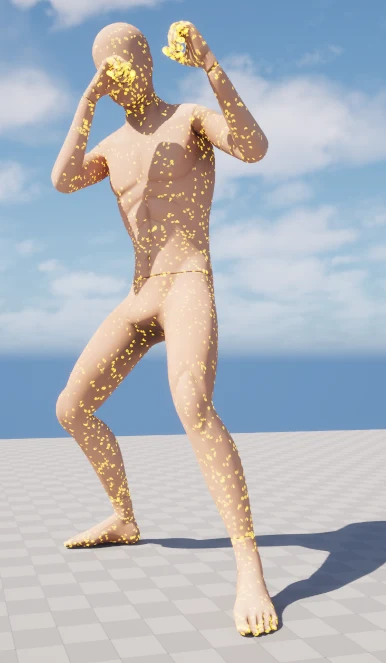
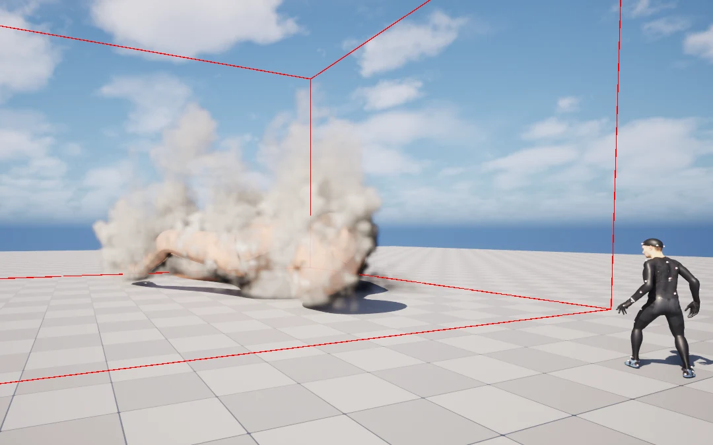
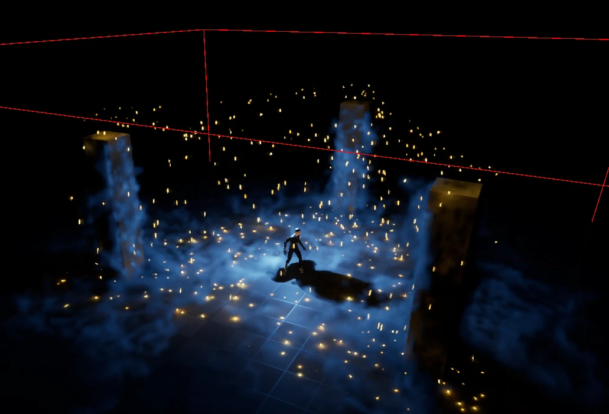
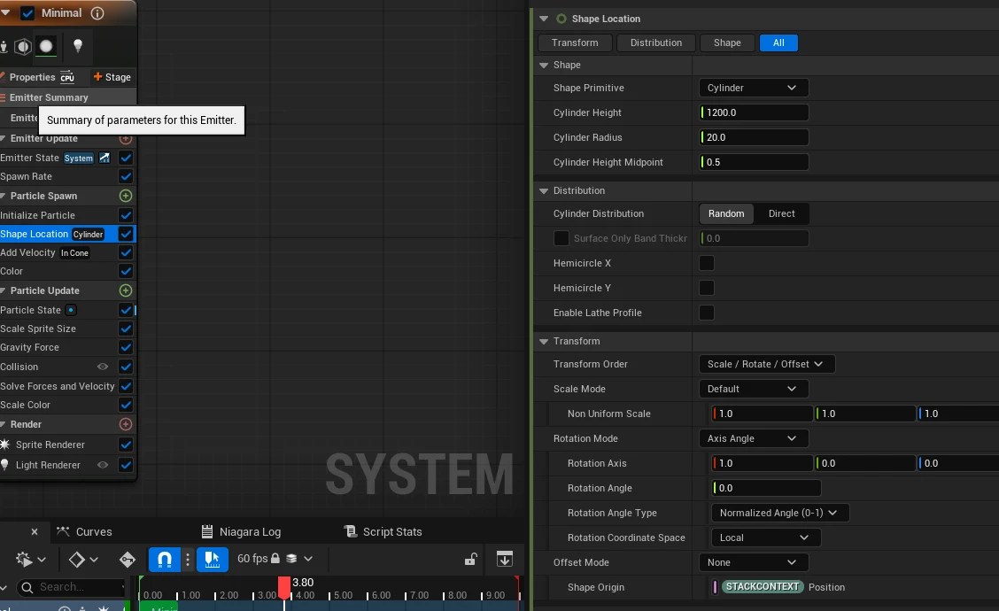
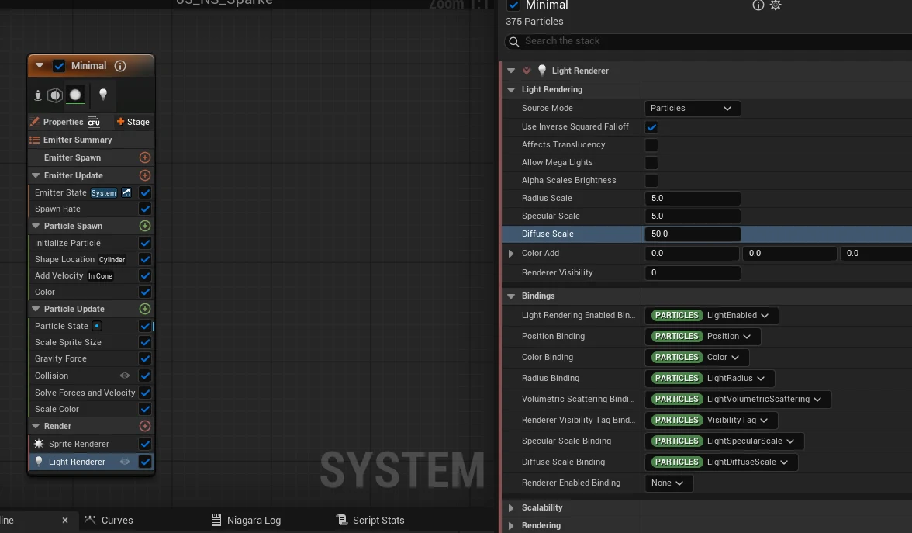

1. 캐릭터 주변으로 흐르는 모래
캐릭터의 형태를 따라 모래가 흘러나오게 만들고 싶어 스켈레탈 메시 표면에 입자를 배치하고 Niagara Fluids의 소스로 연결했다.




표면에 입자가 생기는 것까지 확인한 뒤에는 이 입자에서 가스가 나오도록 소스 속성을 추가하고 Grid3D Gas가 해당 이미터를 읽게 연결했다.
메시 표면의 초기 위치는 Initialize Mesh Reproduction Sprite로 정하고 기존 입자는 Update Mesh Reproduction Sprite로 갱신하도록 구성했고 소스 이미터에는 GPU 시뮬레이션과 Fixed Bounds를 사용했다.
가스 연결에는 Set Fluid Source Attributes를 사용하고 Grid3D Gas에서 Use Emitter Source를 켠 뒤 Emitter Binding에 소스 이미터를 지정했다.
가스가 나타난 뒤에는 연기가 너무 직선적으로 퍼져 보여 바람과 난류를 추가했고 밀도 부력, 해상도, 압력 계산 반복 횟수도 조절하며 아래쪽과 옆으로 흐르는 모래 형태를 맞췄다.
2. 바닥으로 퍼지는 연무
모래 효과를 만든 뒤에는 같은 구성을 이용해 드라이아이스처럼 바닥에 퍼지는 연무를 만들고 싶어 소스를 정적 메시로 바꾸고 입자에 중력을 추가했다.
소스 입자는 직접 보이지 않도록 Sprite Renderer를 끄고 기존 Grid3D Gas를 유지한 상태에서 Wind를 아래쪽으로 설정했고 바닥 주변에서 연무가 퍼지도록 Mesh Collision도 사용했다.
연무가 오래 남는 정도는 Density Dissipation을 1.5로 조절하며 맞췄고 소스 입자의 움직임과 가스의 흐름을 따로 바꿔가며 결과를 확인했다.
3. 스파크와 주변을 비추는 빛


위로 솟아올랐다가 떨어지는 스파크를 만들기 위해 Cylinder 범위에 입자를 생성하고 초기 속도를 준 뒤 중력과 바닥 충돌을 연결했다.
입자가 빠르게 커졌다가 점차 작아지며 사라지도록 크기 곡선을 조절하고 Scale Color로 색상 배율을 바꿨고 주변 표면에도 빛이 닿도록 Light Renderer를 추가했다.




만들면서 Shape Location은 입자가 생기는 위치를 정하고 Add Velocity는 처음 움직이는 방향과 속도를 정한다는 점을 구분했고 크기, 충돌, 조명도 각각 조절하며 결과를 확인했다.
첫 입자 실습
모래와 연무를 만들기 전에는 위로 퍼졌다가 바닥에 부딪히며 사라지는 입자부터 만들어봤고 Add Velocity의 In Cone 방향을 위쪽으로 설정한 뒤 Gravity Force와 Collision을 연결했다.
중력을 추가하니 입자가 바로 떨어져 보여 초기 속도를 조절해 먼저 상승한 뒤 내려오도록 맞췄고 Scale Sprite Size의 곡선으로 처음에는 커졌다가 수명이 끝날수록 작아지게 했다.
이 과정에서 Spawn은 생성 시점의 초기값을 정하고 Update는 살아 있는 입자를 계속 갱신한다는 흐름을 이해하고 생성량, 수명, 속도를 나눠서 조절하기 시작했다.